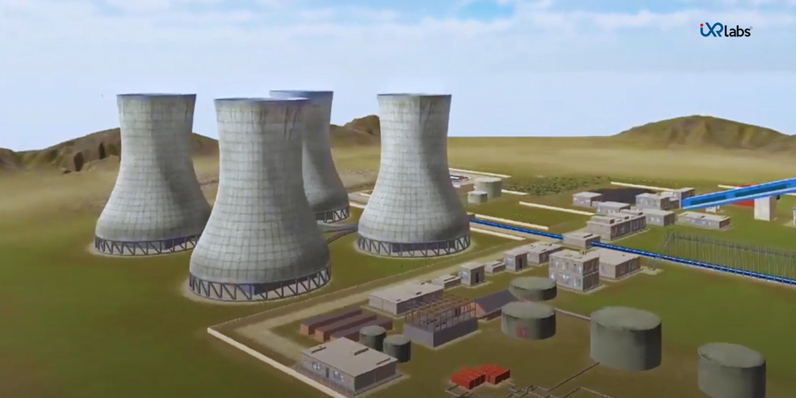

Thermodynamics, a foundational pillar in physics, has been challenging students for generations. With complex concepts and intricate laws, grasping the essence of thermodynamics requires immersive experiences.
But as times change and technology evolves, Virtual Reality (VR) is breaking the boundaries on how we approach and understand the basic concepts of thermodynamics.
In this blog, we will explore how VR thermodynamics is redefining the way we understand its basic concepts, different branches, and the profound laws of thermodynamics.
What is Thermodynamics?
To understand thermodynamics, at its core, is to venture into the field of energy transformations.
So, what is thermodynamics?
In essence, thermodynamics evaluates the interactions between different energy forms, predominantly heat and mechanical work.
But this simple definition barely scratches the surface.
Delving Basic Concepts of Thermodynamics in VR
Thermodynamics, by its very nature, is a study of phenomena that are dynamic, complex, and often not intuitively graspable through mere verbal or visual description.
Traditional textbooks can only represent the basic concepts of thermodynamics in a two-dimensional space.
However, with VR thermodynamic labs, students can interactively explore these concepts in three-dimensional realism.
Consider teaching turbofan jet engine or the blast furnace working. VR can virtually place a student inside these intricate systems.
Want to understand the convection process within a blast furnace working model?
VR thermodynamics has you covered.
Curious about the inner workings of a turbofan jet engine?
Step inside it with your VR headset.
VR, with its multi-dimensional, immersive capabilities, comes into play, offering unparalleled educational experiences, explained below:
☑️ Three-Dimensional Visualizations
With VR, we're no longer limited to viewing static diagrams of thermodynamic processes. Instead, students can engage with animated, three-dimensional models. For example, heat transfer – conduction, convection, and radiation – can be visualized in real-time, letting students observe the microscopic interactions of particles as they transfer energy.
☑️ Hands-on Exploration
Imagine being able to manipulate variables within a virtual environment. Want to see how pressure impacts a gas confined in a piston? Adjust the parameters in your VR simulation and observe the changes. Such interactive experiences cement understanding far better than rote memorization.
☑️ Simulated Lab Experiments
Practical experiments are crucial in thermodynamics. With thermodynamics virtual lab, students can safely conduct experiments that might be too dangerous, expensive, or logistically challenging in a real-world setting.
Imagine exploring the critical point of a substance, where it exists simultaneously as gas and liquid, or observing the delicate balance of conditions required for a triple point, all in the safety of a virtual environment.
☑️ Real-World Scenarios
As previously mentioned, complex systems like turbofan jet engines or blast furnaces can be intricately explored using VR. Students can traverse the systems, following energy transformations step by step.For instance, in a turbofan jet engine, they can watch as air is sucked in, compressed, mixed with fuel, ignited, and then expelled, driving the engine's turbines and producing thrust. Such experiences make the principles of thermodynamics tangible and relatable, bridging the gap between theory and real-world application.
☑️ Collaborative Learning
VR can also be a collaborative platform. Students, although miles apart, can come together in a virtual space, discussing, debating, and problem-solving in real time. They can collectively explore thermodynamic systems, sharing insights and learning from each other, fostering a deeper and shared understanding of the subject.
Enhanced Engagement with Different Branches of Thermodynamics with VR

The vastness and depth of thermodynamics, encompassing multiple branches, can be daunting for learners. Yet, when they can immerse themselves in a world enhanced by VR, these branches become playgrounds for exploration, understanding, and application.
☑️ Classical Thermodynamics
Classical or macroscopic thermodynamics is primarily concerned with the large-scale observation of energy and matter.
Visualizing Energy Transformations: Traditional learning might involve observing real-world phenomena or studying them in textbooks. But with VR, students can be immersed in a system, watching as energy transforms from one form to another, and feeling the impact of those changes around them.
State and Path Functions: Concepts like pressure, volume, and temperature, and their path-dependent or path-independent nature can be experienced in a tangible manner. Imagine changing the conditions of a closed system in thermodynamics virtual lab and watching the transition paths it undergoes.
☑️ Statistical Thermodynamics
Diving into the microscopic world, statistical thermodynamics provides a bridge between the macroscopic and molecular worldviews.
Molecular Chaos and Probability: Students can immerse themselves in a simulated gas chamber, witnessing the unpredictable paths of individual molecules, understanding entropy from a statistical standpoint, and visualizing how macroscopic properties emerge from microscopic behaviors.
Distribution Functions: Instead of flat graphs, VR can render dynamic, three-dimensional plots that show molecular energy distributions, letting students interact with and comprehend Boltzmann distributions like never before.
☑️ Chemical Thermodynamics
This branch is concerned with the energy changes associated with chemical reactions.
Virtual Chemistry Labs: Rather than being told about exothermic or endothermic reactions, students can "feel" the heat flow in a virtual environment. They can set up reactions, modify conditions, and study the energy profiles of reactions, all while being in a safe, controlled VR space.
Reaction Mechanisms and Pathways: Watch complex reactions unfold step-by-step, visualizing energy barriers, intermediates, and transition states, enhancing understanding and retention.
☑️ Biochemical Thermodynamics
Exploring the thermodynamics of biological processes opens a whole new world for learners.
Cellular Processes: Dive inside a cell and witness ATP synthesis in mitochondria, or understand the thermodynamics of DNA replication and protein folding. VR can let students explore the microscopic world of cells in unprecedented detail.
Enzymatic Reactions: Visualize how enzymes lower activation energy barriers, and even simulate mutations to study their effects on reaction pathways.
☑️ Engaging with Advanced Concepts
VR doesn't just stop at the basics. Advanced thermodynamic concepts, often considered tough and abstract, become accessible:
Phase Diagrams: Move beyond 2D plots. With VR, multi-component phase diagrams can be explored in 3D, making it easier to understand complex systems.
Thermodynamic Cycles: Whether it's the Carnot cycle, Rankine cycle, or any other, students can "live" each step, adjusting parameters and immediately observing the outcomes.
"Step into the Future of Learning: Harness the Power of VR to Explore Thermodynamics Concepts and Master Its Laws for a Brighter Tomorrow! Start Your Virtual Adventure Now!"
Understanding Thermodynamics with iXR Labs
 From the movement of individual atoms and molecules to the massive machines that power our world, thermodynamics provides the foundational principles.
From the movement of individual atoms and molecules to the massive machines that power our world, thermodynamics provides the foundational principles.
But how can iXR labs’ VR modules bring this broad and varied field to life?
☑️ Molecule-Level Interactions
Every thermodynamic process starts at the microscopic level. Traditional teaching methods could only offer static images or diagrams of these interactions. With iXR Labs-
Kinetic Theory of Gases: Dive deep into a gas chamber and watch the frantic motion of gas molecules. Experience firsthand how temperature changes their speed or how volume changes affect their spacing.
Phase Transitions: Witness the mesmerizing dance of molecules as they change from solid to liquid to gas and back. Observe the energy intake or release during these transitions and understand the latent heat concepts more intuitively.
☑️ Machines in Motion
The principles that govern the motion of molecules also drive the engines and devices we use every day. But understanding these devices, with their many parts and complex interactions, can be a challenge.
iXR Labs’ VR solutions change that:
☑️ Turbofan Jet Engines
Once an enigma confined to complex diagrams, now a reality you can walk through. Follow the air's journey as it's taken in, compressed, combusted, and expelled. Understand how the Brayton cycle, the heart of jet engines, efficiently converts chemical energy into mechanical power.☑️ Thermal Power Plants
Beyond just knowing that they generate electricity, the thermal power Plant Model in VR provides a tour from the coal chamber to the steam turbine. Visualize the Rankine cycle in action, and experience the conversion of heat energy to mechanical work, and ultimately, electrical energy.

☑️ Central AC Units
Not just a box that emits cold air. With these modules, the refrigeration cycle becomes clear. Observe the refrigerant as it circulates through the compressor, condenser, expansion valve, and evaporator while learning central AC units. Witness the phase changes and understand the crucial role each component plays.
Interactive Learning and Problem Solving
Beyond mere observation, its true power lies in its interactivity:
☑️ Scenario Simulations
Ever wondered how a steam engine would function in outer space or deep underwater? With VR solutions, students can set conditions and observe how thermodynamic systems behave under different scenarios.
☑️ Problem Solving in Virtual Labs
Confronted with a challenge? Need to increase the efficiency of a steam turbine or reduce the emissions of a combustion engine?
VR can serve as a playground for problem-solving, allowing students to tweak conditions, modify components, and test solutions in real time.
Conclusion
In conclusion, by transforming abstract concepts into immersive experiences, VR bridges the gap between theoretical knowledge and tangible understanding.
With VR offerings from iXR Labs, students no longer rely solely on static diagrams, they live and interact with thermodynamic principles in a dynamic environment.
As technology advances, it's essential for educational methods to evolve alongside. With VR, not only we are enhancing the learning experience, but also paving the way for the next generation of innovators.
It's time for both educators and learners to harness the immersive power of VR in the field of thermodynamics.